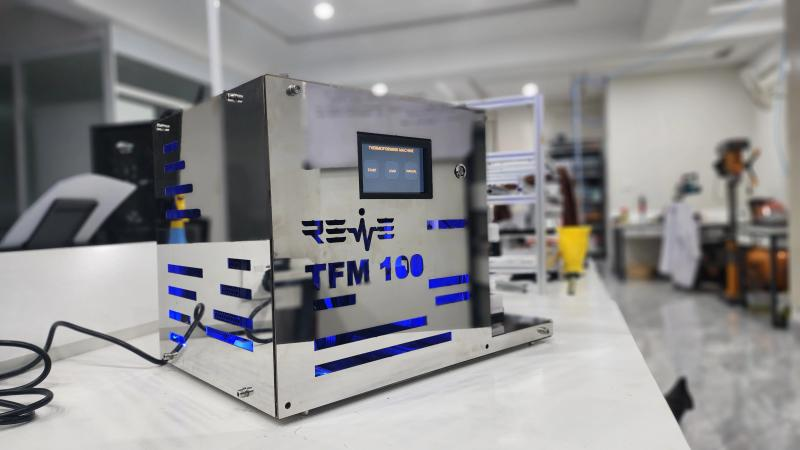

Revive Medical Technologies · R&D Equipment
Thermoforming Machine
Catheter Tip Shaping Machine
⚙️ A specialized piece of equipment used in early prototype shaping of catheters in Catheter Research & Development. It utilizes heat and pressure to mold catheter tips into specific shapes and designs needed.
🔬 Developed at Revive Medical Technologies — precision control for advanced catheter prototypes
📱 HMI Screens · Operator Interface
🏠 LANDING · STARTUP
THERMOFORMING
MACHINE
MACHINE
✓ ready · standby
🔥 PRE-HEATING
PRE-HEATING
ABORT
Temperature
82 °C → 145 °C
warm-up phase
🌡️ HEATING CYCLE
HEATING
ABORT
Temperature
156 °C / 180 °C
Time
00:45 / 02:00 min
❄️ COOLING STAGE
Cooling
ABORT
Temperature
78 °C → 35 °C
active cooling ramp
🕹️ MANUAL MODE
MANUAL MODE
Temperature
142 °C
HEAT
COOL
manual override · heat/cool actuators
⚙️ SET PARAMETERS
SET PARAMETERS
Temperature
185 °C
Heat Time
95 sec
Cool Time
120 sec
▲ ▼ adjust via encoder
📋 Full HMI Flow: Landing → Preheating → Heating → Cooling → Parameter Editor + Manual Mode (ABORT available on every critical screen)
📌 Equipment Overview
Catheter Tip Shaping Machine — designed specifically for R&D prototyping at Revive Medical Technologies.
Combines precision thermal control with pneumatic pressure to form distal tips of medical catheters, enabling rapid iteration of complex geometries (tapered tips, rounded ends, step profiles).
⚙️ Process Sequence
- LOAD – catheter segment into mold cavity
- PRE-HEATING – ramp to glass transition temperature
- HEATING + PRESSURE – dwell time shapes the tip
- COOLING – controlled quenching to set form
- MANUAL mode for process development & tuning
🎛️ Key Parameters
🌡️ Temp range: Ambient → 220°C (accuracy ±1°C)
⏲️ Heat Time: 0–300 sec programmable
❄️ Cool Time: 0–240 sec with active air/conductive cooling
🔧 Pressure assist: 0–6 bar pneumatic shaping
🧪 R&D / Prototyping advantage
Designed for low-volume, high-fidelity catheter tips – used by Revive Medical engineers to validate tip designs (angiographic, drainage, introducer sheaths).
🔧 Technical Specifications
Heater type:
Cartridge + IR hybrid
Cooling method:
Forced air + peltier assist
Controller:
PID with auto-tuning
Interface:
7" touch / physical abort
Mold material:
Aluminum / brass inserts
Safety:
Overtemp + E-stop
📈 Catheter shaping examples
- Soft atraumatic bullet tips
- Step-down diameter transitions
- Thermoformed bevels (directional flow)
- Reinforced tip bonding prep
💡 Revive Medical workflow: post-process validation via leak test & burst profile.
📄 Thermoforming Flow v1 (UI reference)
The interface includes pre-heating, heating, cooling, manual mode, and parameter page with abort controls — matched from engineering UI mockups.
Flow: LANDING → LOAD → PREHEAT → HEAT+COOL → MANUAL/PARAM
📸 Actual Thermoforming Machine

Prototype unit – Catheter tip shaping in action
📸 Actual Machine GUI Screens

Landing Page
⬆️ Swipe or use buttons to browse actual HMI screens.